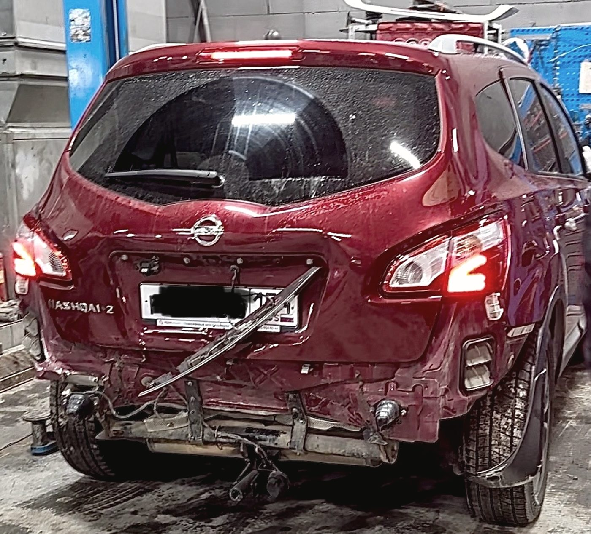
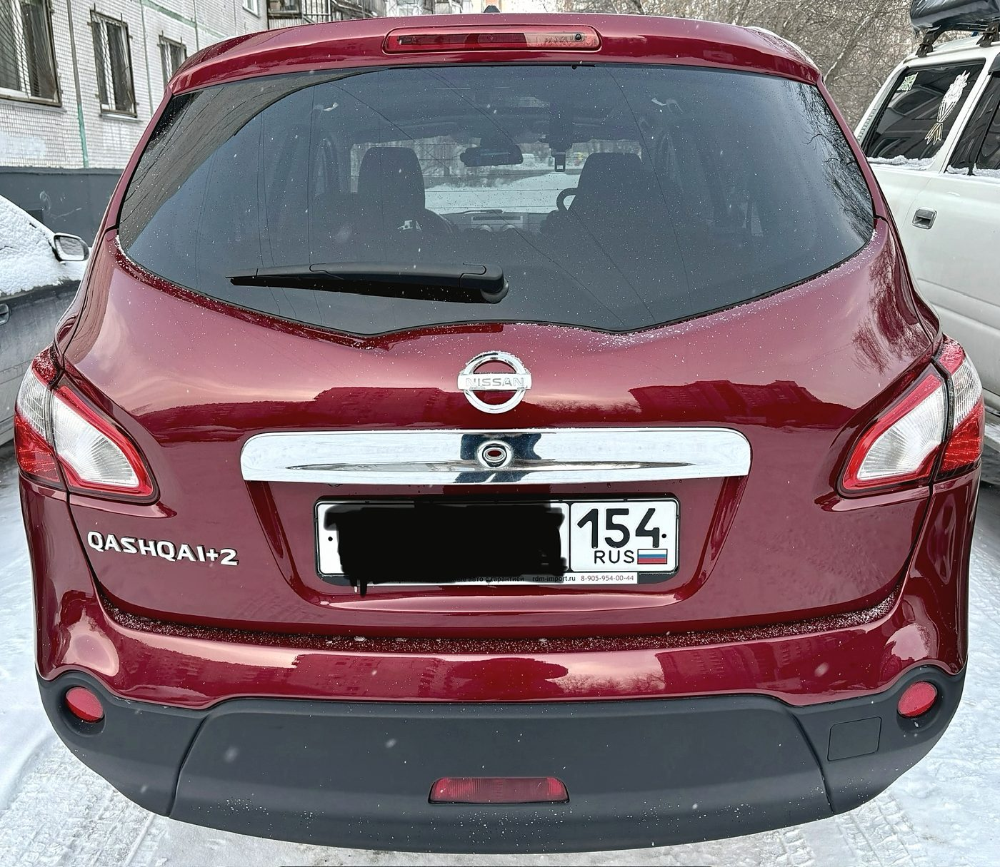
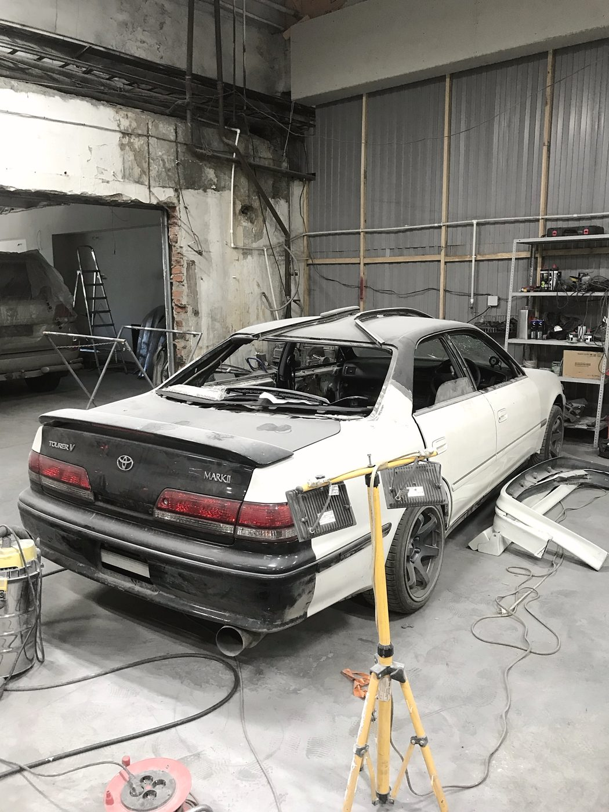
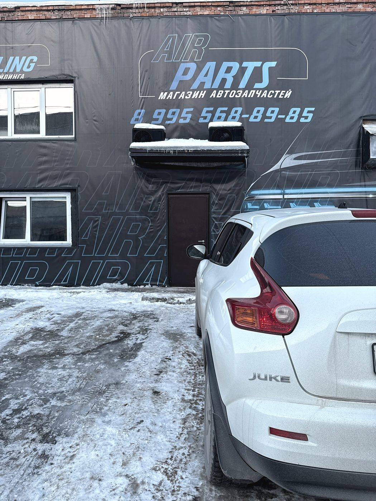
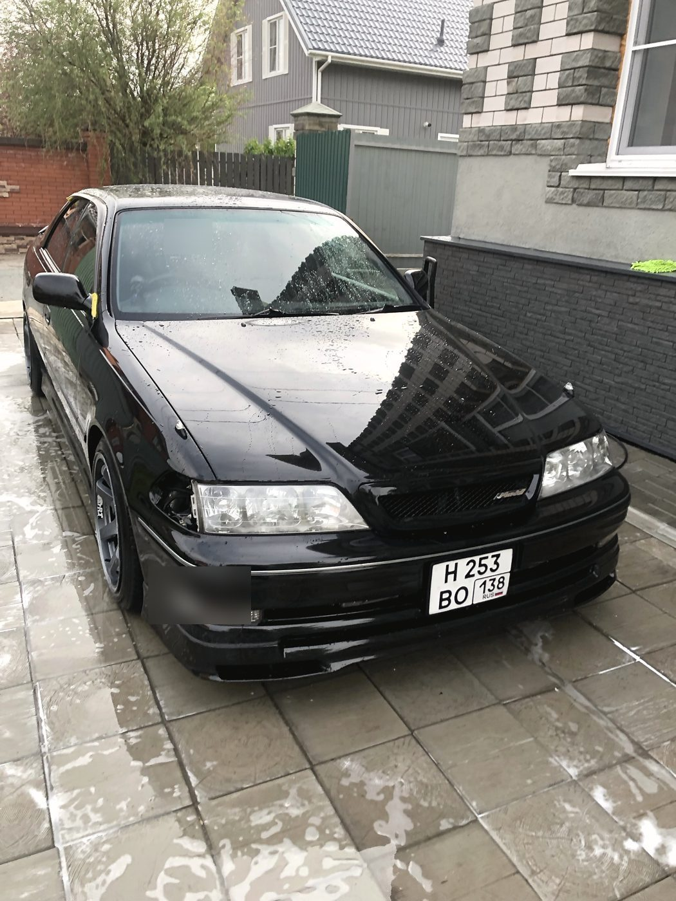
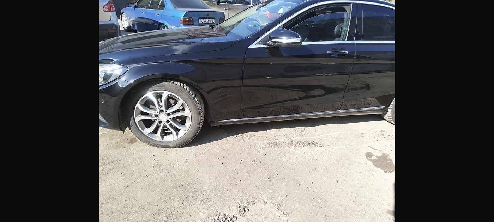

Автосервис, детейлинг и запчасти · улица Доватора, 11 · Дзержинский район
Одна станция вместо пяти
Кузовной ремонт после ДТП, дизельная топливная, турбины, коробки,
развал-схождение, климат, электрика — и рядом детейлинг и свой магазин запчастей.
Машину не нужно возить по городу от мастера к мастеру: всё, что ей нужно,
делается на одной площадке.
Air Brush · автосервисAir Detailing · студияAir Parts · запчасти
Доватора, 11. На баннере три вывески подряд — это не реклама трёх фирм,
а три двери одного двора.
Кузов после ДТП
Собираем то, от чего отказываются
Восстановление геометрии, замена
силовых элементов, сварка, покраска и сборка по зазорам. Мы берёмся и за редкие машины:
один клиент привёз Lixiang, за который мало кто хотел браться, — правили крыло,
меняли и красили капот, уложились ровно в озвученный срок.
Было

Стало

Держим связь и показываем результат
«Постоянно поддерживали связь, подробно объясняя процесс и демонстрируя результат
до и после работы» — так это описал Михаил, у которого мы делали крыло и дверь
с выравниванием вмятин и покраской. Работу закончили точно в оговорённые десять дней.
Срок называем один раз
Если что-то задерживает работу не по нашей вине — например, поставка редкой краски —
мы говорим об этом сразу, а не двигаем дату молча. Один ремонт ждал подбора цвета
две недели, зато сам ремонт занял три рабочих дня и в цвет попали идеально.
Сервис
Что чиним
Дизель и турбины
Ремонт дизельных двигателей, дизельной топливной системы, ремонт турбин —
редкий набор для одной станции.
Бензиновые двигатели
Диагностика и ремонт, замена масла аппаратным способом, устранение течей.
АКПП и МКПП
Ремонт автоматических и механических коробок, диагностика по симптомам.
Ходовая и пневмоподвеска
Подрамники, рычаги, стойки, пневмоподвеска. Загнутый подрамник поправили
за три часа — обычный для нас случай.
Развал-схождение
После любого кузовного или ходового ремонта — обязательный пункт,
а не отдельная поездка.
Электрика и электроника
Ремонт электронных систем, стартеры и генераторы, диагностика
с понятными объяснениями.
Климат
Обслуживание климатических систем: кондиционер и отопитель.
Стёкла, оптика, зеркала
Установка и ремонт автостёкол и автооптики, резка и ремонт автозеркал.
Переоборудование
Установка фаркопа и другое переоборудование, запчасти для грузовых.

Цех на Доватора. Здесь машина проходит от разбора до сборки,
не переезжая никуда.

Свой магазин запчастей и контрактные детали — деталь чаще всего
не нужно ждать неделю.
Детейлинг и тюнинг
И то, что делают для удовольствия
Название у нас от аэрографии,
и она никуда не делась: художественная роспись по кузову у нас есть до сих пор.
Рядом — детейлинг, шумоизоляция, перетяжка салона, обвесы, врезка люка,
хромирование, тюнинг подвески и выхлопа.
Аэрография
Художественная роспись по кузову. Редкая услуга, с которой мы начинались.
Детейлинг
Полировка, химчистка салона, предпродажная подготовка. Комплекс к продаже
делаем примерно за пять часов.
Шумоизоляция и салон
Шумоизоляция, перетяжка салона, ремонт салона. Делаем так, как договорились,
вплоть до сеток в бамперах.
Обвесы и внешность
Обвесы и спойлеры, нанесение плёнки, хромирование, тюнинг дисков,
врезка люка.
Тюнинг подвески и выхлопа
Тюнинг внедорожников, подвески, выхлопной системы. Всё, что меняет
характер машины, а не только вид.
Подбор авто перед покупкой
Смотрим машину до сделки: кузов, геометрия, следы ремонта, электроника.
Дешевле, чем потом чинить чужие ошибки.

С такими машинами тоже работаем: стекло, оптика, кузов —
всё в одном месте.

Порог и накладка на месте, зазоры выставлены. Именно на этом
видно уровень сборки.
Отзывы · 4,9 из 5 по 194 оценкам в 2ГИС
«У меня необычная машина, за её ремонт мало кто хотел браться —
а здесь взяли и справились»
Константин · кузовной ремонт Lixiang · отзыв в 2ГИС, 10 августа 2026
Сделали кузовной ремонт крыла и двери с выравниванием вмятин и покраской,
при этом постоянно поддерживали связь, подробно объясняя процесс и демонстрируя
результат до и после работы. Все работы завершили точно в оговорённые десять дней.
Михаил · 4 августа 2026
Убирали царапины на дверях. На подбор цвета ушло две недели, но это не зависело
от мастеров, поэтому у меня нет никаких претензий. Сам ремонт выполнили
за три рабочих дня и с цветом угадали идеально.
Александр · 3 августа 2026
После ДТП мой автомобиль отремонтировали очень хорошо. Также воспользовалась
услугами детейлинга: салон почистили качественно, с полным разбором, дополнительно
помыли подкапотное пространство.
Полина · 11 августа 2026
Записалась легко и уже на следующий день привезла машину для подготовки к продаже.
Выполнили полировку и химчистку, учли все мои пожелания. Справились примерно
за пять часов.
Кристина · 7 августа 2026
Второе мнение — это нормально
Иногда наша оценка оказывается выше, чем у соседнего сервиса: мы считаем полную
покраску там, где кто-то возьмётся отполировать. Мы объясняем, из чего складывается
сумма — родная краска, толщина покрытия, риск на кромке, — но настаивать не будем.
Если вам предложили дешевле, съездите и сравните: это ваше право, и обиды у нас
не будет.
Спрашивайте, почему столько
Любая цифра в нашей смете разбирается на составляющие. Просите показать
повреждение, замерить толщиномером и объяснить, почему полировкой не обойтись, —
нормальный мастер объяснит это за две минуты.
Карта загружается с сервера «Яндекса» и устанавливает свои cookie.
Записаться
Мы используем файлы cookie: технически необходимые для работы страницы и те, что
устанавливает виджет «Яндекс.Карт». Аналитику и рекламные счётчики без вашего согласия
не подключаем. Подробности — в Политике обработки персональных данных.